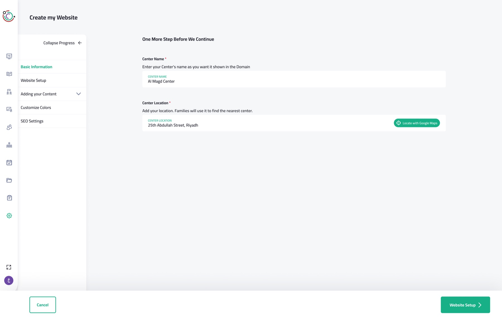
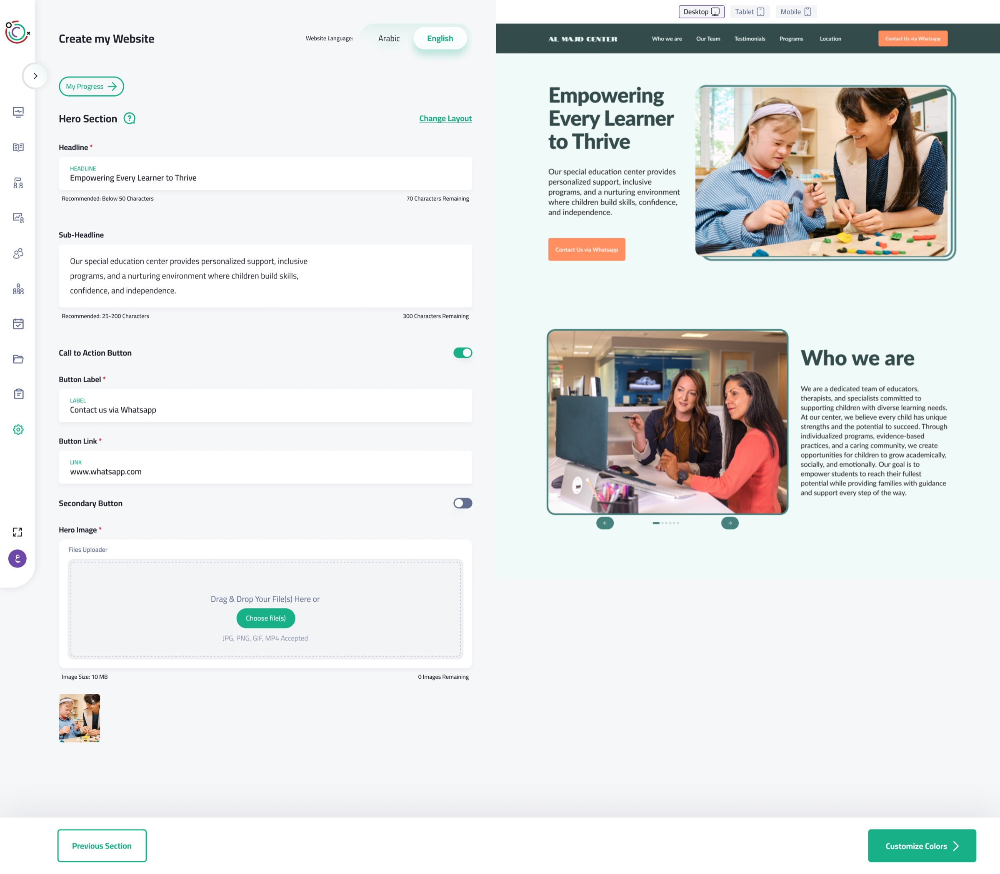
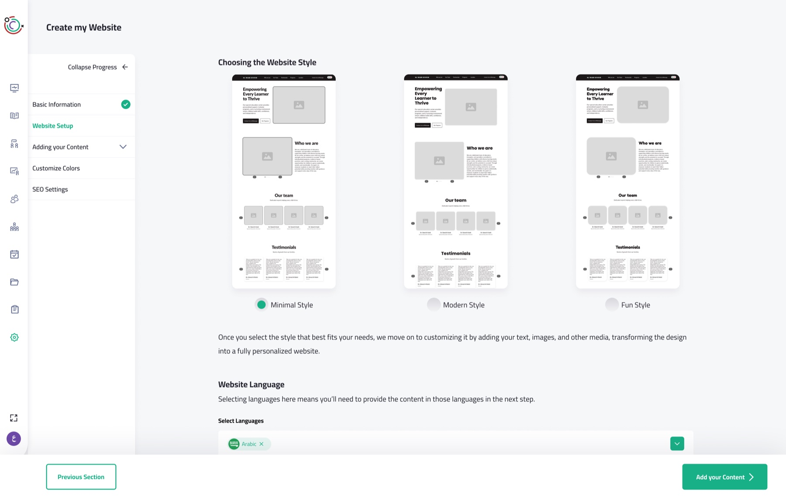
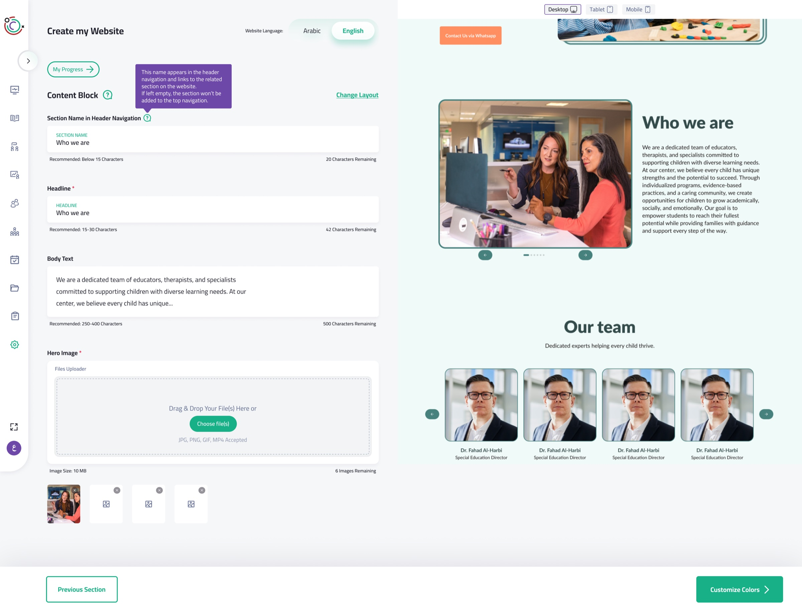
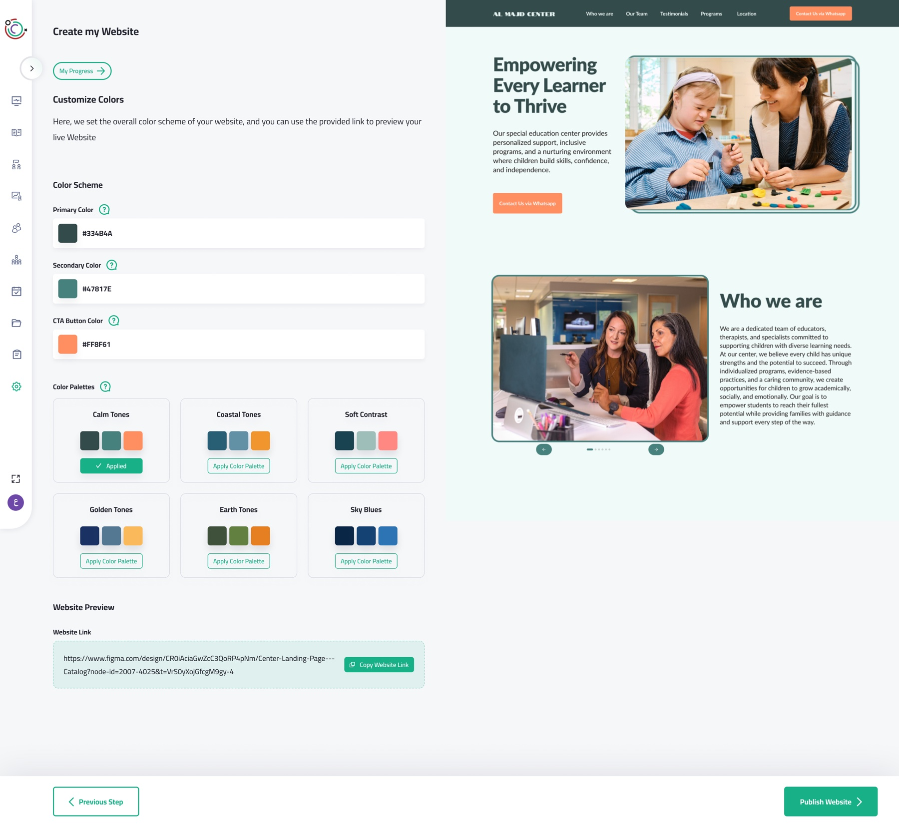
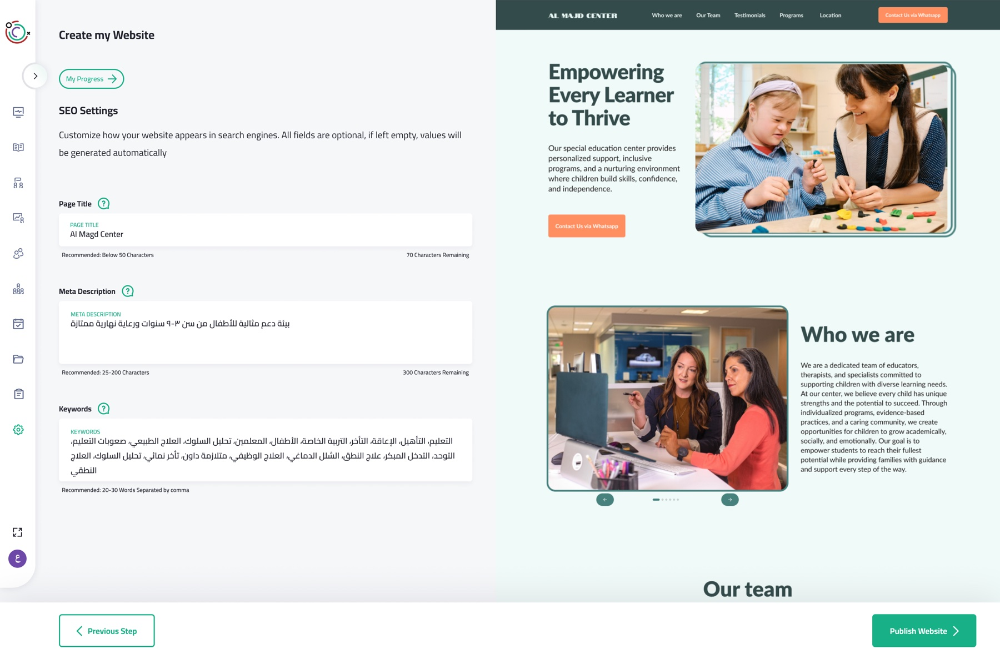
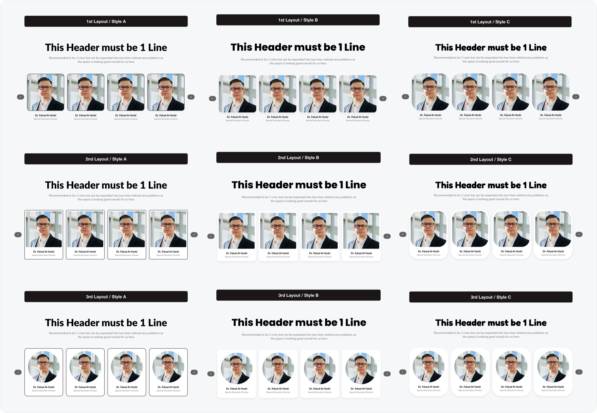

Basic information
An easy start: owners type their center’s name and pin its location on a map.

Mostafa Elkorashy
A guided website builder that lets non-technical daycare owners publish their own site, without knowing what a "hero section" is.

Most daycares and centers on our SaaS had no website for the families they serve. We wanted any owner, however non-technical, to publish a simple site that shows what their center stands for.
Owners don’t know how a website is put together, or what “hero section” or “SEO” mean. So the builder explains every section in plain language, pre-fills every field with example content, and shows each edit instantly in a live preview.
Each section says what it is and why a visitor needs it, in words an owner already uses.
Every input is pre-filled with example content, so owners edit instead of starting from nothing.
Every change appears instantly in a live preview, across desktop, tablet and mobile.
An easy start: owners type their center’s name and pin its location on a map.

Owners pick an overall style (minimal, modern or fun), each one shown visually. Then they choose the site’s languages, knowing they’ll write content for each one.

The big one. Owners add, remove and fill in sections, picking a layout for each while it keeps the site’s style. Every field starts with example text, and a live preview switches between device sizes.

Owners start from ready-made palettes and can adjust any color except the background. Locking the background prevents the worst contrast problems.

The hardest step to explain to a non-technical owner, so every input comes with its own explanation and example content.

Every section comes in 9 versions. Owners get real choice, but can’t break consistency. We don’t expect them to know how mismatched borders and strokes make a site feel off.

centers and daycares now run their own website, built by owners with no technical background.